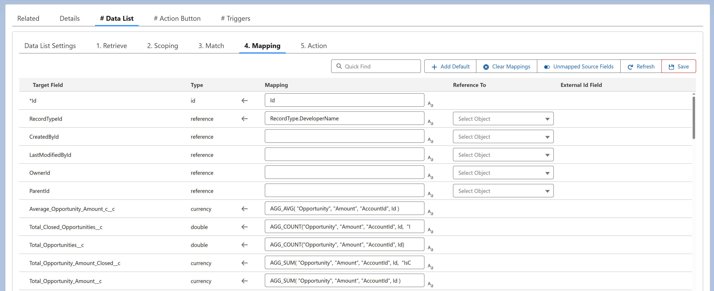

<article>
    <p>
      The "Save" button validates and commits all configured mappings in the 
      Mapping section, ensuring that field assignments, transformations, and 
      formulas are properly stored for execution.
    </p>
  </article>
  
  